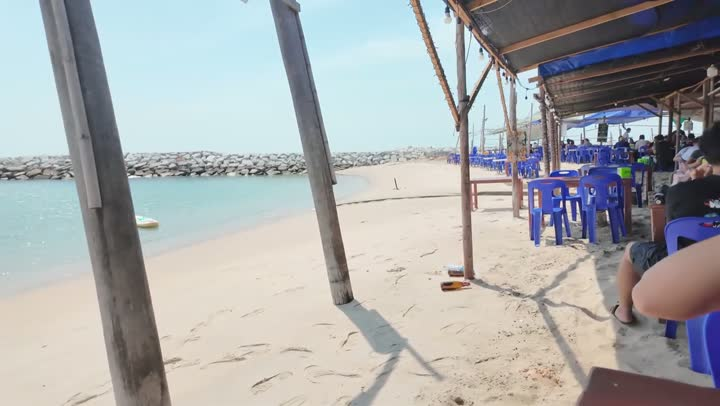
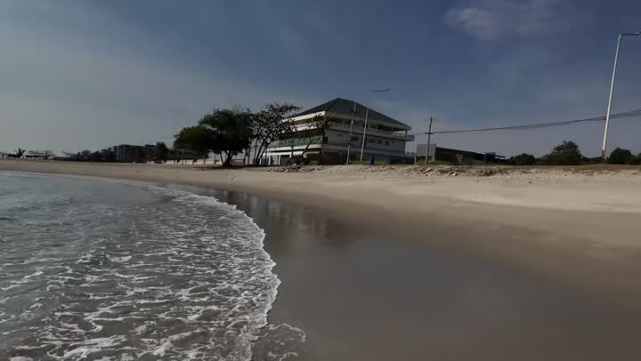
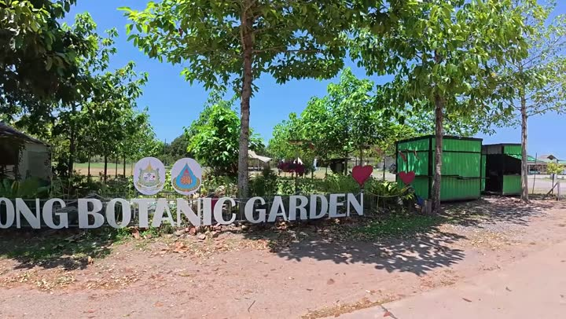
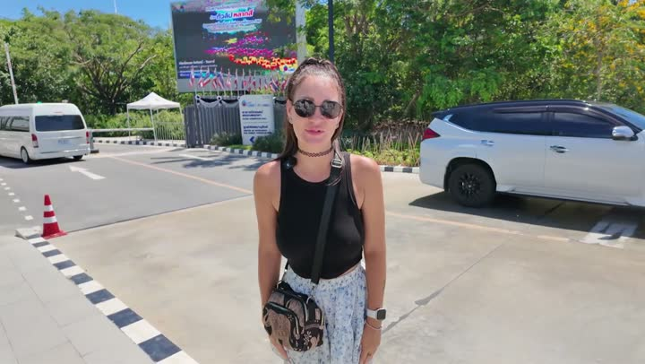

Атлас мест · Таиланд
Районг — наши места
25 мест12 роликов16 советуем
Наш топ-10

Пляж Районга (Rayong beach)пляж · 👍 Советуем · дёшево
Рыбацкая деревня Районгпляж · 👍 Советуем · дёшево Отель Бонваяжотель · 👍 СоветуемКафе «Пак Нам» с видом на заливкафе и ресторан · 👍 СоветуемПляж Мунлайтпляж · 👍 СоветуемБезлюдный пляжпляж · 👍 Советуем
Отель Бонваяжотель · 👍 СоветуемКафе «Пак Нам» с видом на заливкафе и ресторан · 👍 СоветуемПляж Мунлайтпляж · 👍 СоветуемБезлюдный пляжпляж · 👍 Советуем Кафе «Сильвер Резорт»кафе и ресторан · 👍 Советуем · средне
Кафе «Сильвер Резорт»кафе и ресторан · 👍 Советуем · средне
Озеро с лотосами, Районгозеро · 👍 Советуем · средне Отель «Лариса Резорт»отель · 👍 Советуем
Отель «Лариса Резорт»отель · 👍 Советуем Отель Сильвер Сэнд, Ко Самет (Silversand Resort)отель · 👍 Советуем
Отель Сильвер Сэнд, Ко Самет (Silversand Resort)отель · 👍 СоветуемГде поесть — 4
С детьми — 8
Пляж Районга (Rayong beach)пляж · 👍 Советуем · дёшевоРыбацкая деревня Районгпляж · 👍 Советуем · дёшевоПляж Мунлайтпляж · 👍 СоветуемКафе «Сильвер Резорт»кафе и ресторан · 👍 Советуем · среднеОтель «Лариса Резорт»отель · 👍 Советуем Кафешка «Лэнг»кофейня и десерты · 👍 Советуем · средне
Кафешка «Лэнг»кофейня и десерты · 👍 Советуем · средне Минимаркет возле отеля «Сильвер Сэнд»супермаркет · 🤔 На любителя · дорого
Минимаркет возле отеля «Сильвер Сэнд»супермаркет · 🤔 На любителя · дорого
Кафе «Сильвер Резорт»кафе и ресторан · 👍 Советуем · среднеОтель «Лариса Резорт»отель · 👍 Советуем
Сад тюльпанов «Миракл оф Нэчурал», Районгплантация · 👍 СоветуемКафешка «Лэнг»кофейня и десерты · 👍 Советуем · среднеМинимаркет возле отеля «Сильвер Сэнд»супермаркет · 🤔 На любителя · дорогоКрасивые виды — 9
Отель Бонваяжотель · 👍 СоветуемПляж Мунлайтпляж · 👍 СоветуемОтель Сильвер Сэнд, Ко Самет (Silversand Resort)отель · 👍 СоветуемСад тюльпанов «Миракл оф Нэчурал», Районгплантация · 👍 СоветуемКафешка «Лэнг»кофейня и десерты · 👍 Советуем · среднеПоле подсолнухов у водохранилища Док Крайплантация · 👍 Советуем Остров Ко Самет (Ko Samet)остров · 👍 Советуем · дёшево
Остров Ко Самет (Ko Samet)остров · 👍 Советуем · дёшево Пляж Ао Пакарангпляж · 🤔 На любителя
Пляж Ао Пакарангпляж · 🤔 На любителя Пляж Ао Ной На (Noi Na Beach)пляж · 🤔 На любителя · средне
Пляж Ао Ной На (Noi Na Beach)пляж · 🤔 На любителя · среднеБюджетно — 5

Частые вопросы — Районг
Какие интересные природные достопримечательности есть в Районге?
В Районге рекомендуем посетить сад тюльпанов Miracle of Natural, поле подсолнухов у водохранилища Док Край и озеро с лотосами.
Где вкусно и недорого покушать в Районге?
Попробуйте кафе «Пак Нам» с видом на залив и местное кафе в самолёте, где вкусный кофе и десерт 'птичье молоко' с апельсином.
Как развлечься в Районге с детьми?
Можно отправиться в парк рядом с океанариумом, поплавать на каяках по озеру с лотосами или посмотреть цветы в саду тюльпанов Miracle of Natural.
Что интересного можно увидеть в парке рядом с океанариумом?
Там есть озеро с лотосами, тенистые аллеи и необычное кафе-самолёт, внутри которого можно почувствовать себя пассажиром бизнес-класса.
Все места — 25
Пляжи и острова — 10
- Безлюдный пляж 👍 Советуем
- Остров Ко Самет (Ko Samet) 👍 Советуем
- Пляж Ао Ной На (Noi Na Beach) 🤔 На любителя
- Пляж Ао Пакаранг 🤔 На любителя
- Пляж Ауй 🤔 На любителя
- Пляж Мае Рам Пхуенг (Mae Ram Phueng Beach) 🤔 На любителя
- Пляж Мунлайт 👍 Советуем
- Пляж Районга (Rayong beach) 👍 Советуем
- Пляж Саенг Чан (Saeng Chan Beach) 🤔 На любителя
- Рыбацкая деревня Районг 👍 Советуем
Еда — 4
- Кафе «Пак Нам» с видом на залив 👍 Советуем
- Кафе «Сильвер Резорт» 👍 Советуем
- Кафе в самолёте «Эйр Даймонд», Районг 🤔 На любителя
- Кафешка «Лэнг» 👍 Советуем
Рынки и магазины — 3
- Минимаркет возле отеля «Сильвер Сэнд» 🤔 На любителя
- Плавучий рынок Ко Клой (Ko Kloi Floating Market) 👍 Советуем
- Севен (Seven) 👍 Советуем
Природа — 3
- Озеро с лотосами, Районг 👍 Советуем
- Поле подсолнухов у водохранилища Док Край 👍 Советуем
- Сад тюльпанов «Миракл оф Нэчурал», Районг 👍 Советуем
Жильё — 3
- Отель «Лариса Резорт» 👍 Советуем
- Отель Бонваяж 👍 Советуем
- Отель Сильвер Сэнд, Ко Самет (Silversand Resort) 👍 Советуем
Транспорт — 1
- Пирс Бан Пхе (Ban Phe Pier) 🤔 На любителя
Животные — 1
- местный океанариум Районга (Rayong Aquarium) 🤔 На любителя
Атлас мест канала «Юля и Дима / БЕЗ ТОРМОЗОВ». Описания составлены по нашим роликам; цены — на момент съёмки. Нашли неточность — напишите нам в Telegram.